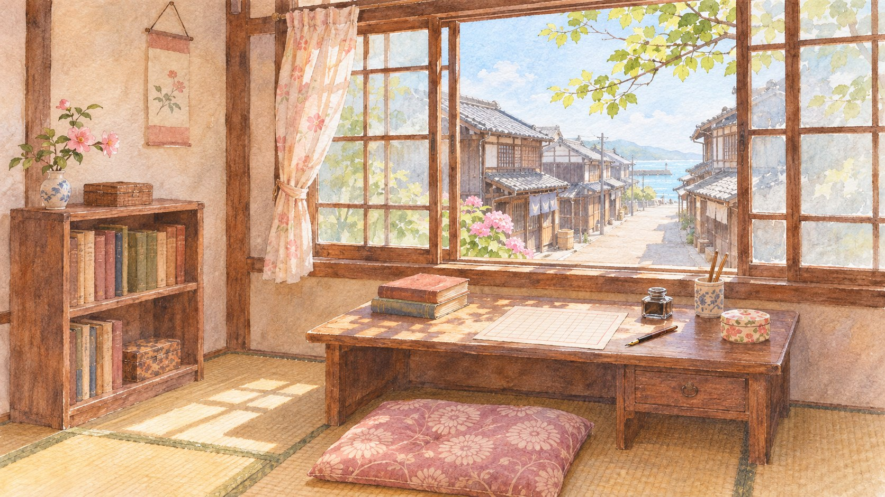

11月の作者「金子みすゞさんのさくひん」 ― 毎日ひとつ、詩を短歌にしてお届けします
みすゞさんの年表
横にすべらせて、歩みをたどれます。「道を歩く」を押すと、その時代の散歩道へ飛びます。
窓辺で生まれたことば
記念館に再現された、通りに面した二階の「みすゞの部屋」から想像した水彩画です。

通りを見つめる、明るい二階
記念館では、机・座布団・本棚を置いた簡素な部屋が再現されています。この絵は展示と町の景観をもとにした想像図で、実際の執筆時の室内をそのまま再現したものではありません。
花の散歩道
道は、みすゞさんの歩んだ時代の順につづいています。詩が刻まれた岩を押すと、当時の背景とエピソードが開きます。
100篇のことばの棚
みすゞさんが遺した512篇のうち、100作品への入口です。30作品はケセラが新しく詠んだ短歌と解説つき。ほかは題名と収録情報から原詩へ出会うための案内です。
もう一度読む棚
「すごくいい」「いいね」を押した作品が並びます。
いまの仙崎を歩く
金子みすゞ記念館から、学校跡と港へ。簡略図は達成記録用です。実際の道順はGoogleマップで確認してください。
わたしの踏破図
0 / 2ルート達成
金子みすゞ
記念館
記念館
瀬戸崎
小学校跡
小学校跡
仙崎港
童謡の書庫
みすゞさんの三冊の手帳から、童謡を選んで読めます。
つらい気持ちが続くときは、ひとりで抱えこまず、身近な人や、お近くの相談窓口に話してみてください。